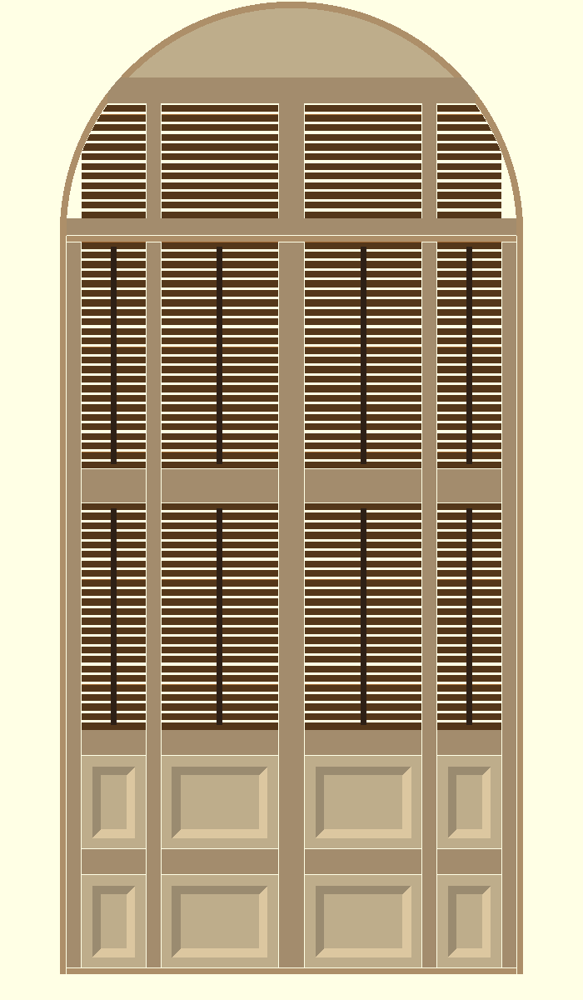
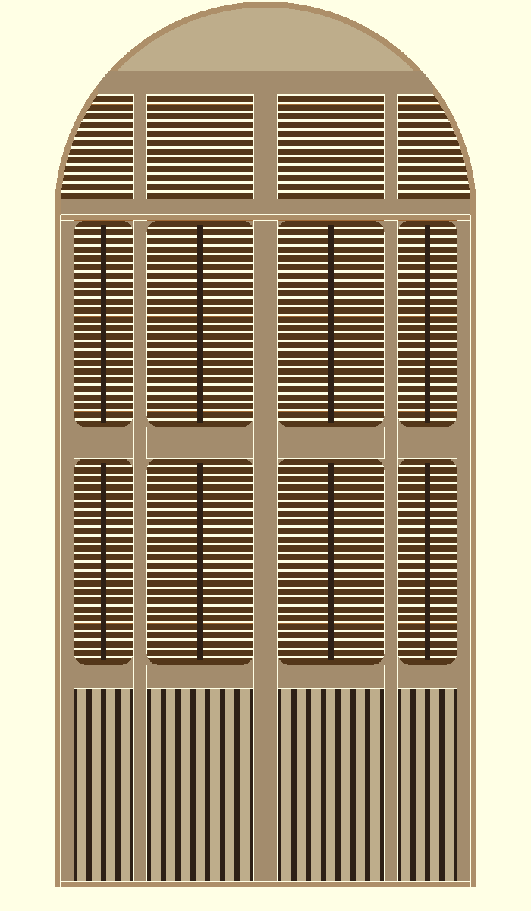
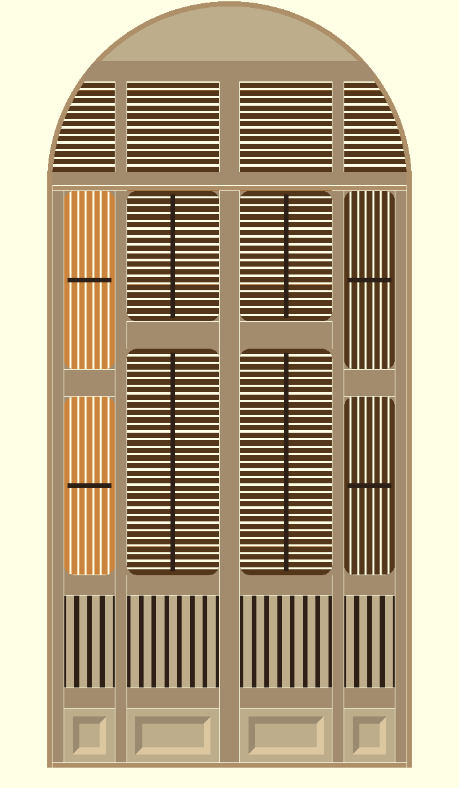

1 Japanese
thin members, unequal bays, chamfered panels + dark boss, 45° closed

2 Slat wall
rounded corners r1.5, vertical slat-wall bottom, housed arch, 27° open

3 Staggered
inner rails +7, vertical corner louvers + operators, chamfered plinth
4 Soft corner
same as 3 with fillets eased to 7/8